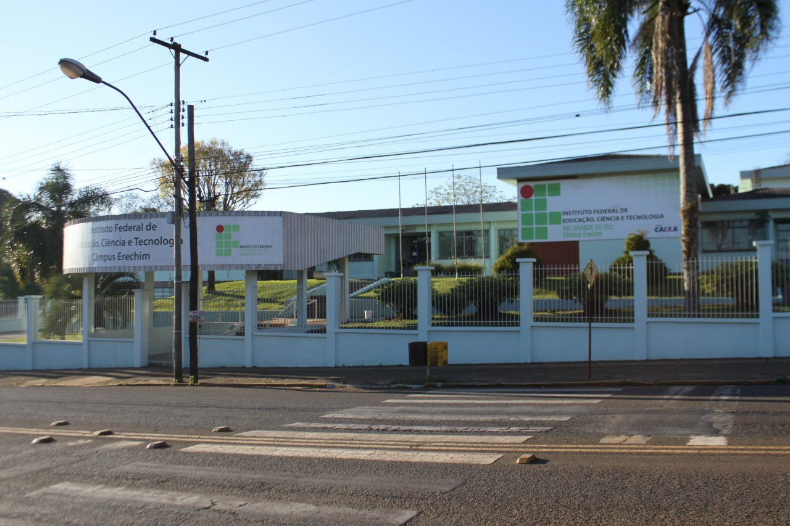

Como melhoraremos o Pré-IFRS Campus Erechim
Atualmente o Pré-IFRS no Campus Erechim enfrenta alguns problemas como a falta de divulgação, interface velha e desatualizada e falta de humanidade no site, entretanto ele também tem suas qualidades como um bom banco de questões, abrange todos os conteúdos exigidos na prova de ingresso e sua agilidade. Diante desses e outros problemas decidimos repaginar o Pré-IFRS, inicialmente tivemos somente a ideia de fazer um processo de gamificação com o site para deixar mais atrativo e popular com tudo conversando com nosso orientador o Prof. Dr. Vinicius percebemos outro problema que é o fato de acabarem faltando algumas explicações e optamos por além de remodelarmos o site vamos gravar vídeos com as explicações dos conteúdos antigos e dos novos abordados nas novas provas atuais. Pretendemos começar a parte mais estrutural do Pré-IFRS gamificado já em 2025, pelo fato de já termos dados o suficiente e agoras estamos transformando eles em informações e vamos terminar isso ainda esse ano para deixarmos toda a execução inicial para o 2º ano já no 3º ano pretendemos terminar o site gamificado com os novos vídeos de explicação, novas questões além das já existentes para ele ficar o mais completo possível e garantir maior destaque para ele no site oficial do IFRS Campus Erechim porque atualmente ele está quase que escondido. Além dessas questões do site, nosso grupo está amadurecendo um possível projeto que seria implantar o Pré-IFRS nas escolas municipais de Erechim e fazer com que alguns alunos de escolas públicas tenham um treinamento bom e suficiente para a prova de ingresso.
